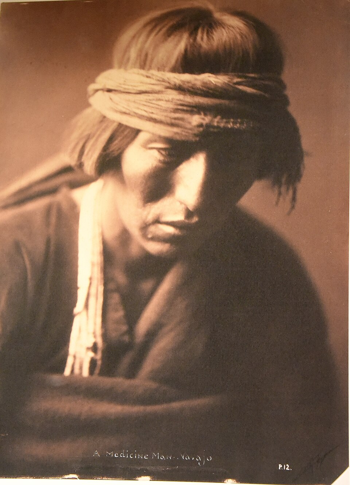
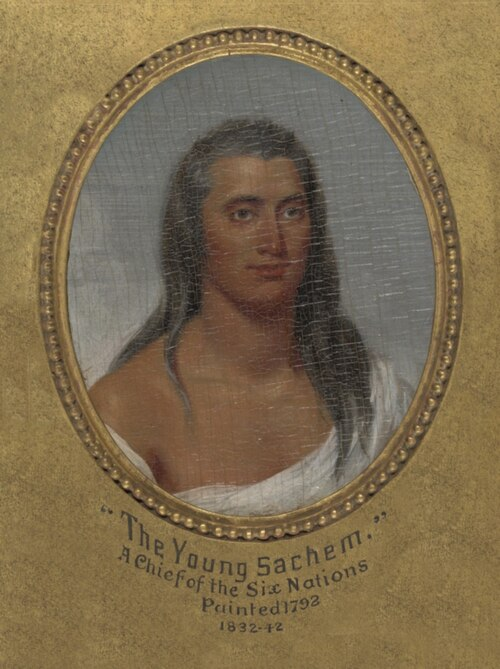

Önemli Kabileler
Kartların üzerine tıklayarak detaylı bilgilere ulaşabilirsiniz

Lakota (Sioux)
Great Plains'in ünlü atlı avcıları. Oturan Boğa ve Kızıl Bulut gibi liderleriyle direnişleri efsaneleşmiştir.
📷 Oturan Boğa, Montreal 1885 · Kamu malı
▼Great Plains'in atlı ulusu. Lakota, Kuzey Amerika'nın en tanınmış yerli halklarından biridir. "Oceti Sakowin" (Yedi Ocak Konseyi) adı verilen büyük birlik, Dakota, Nakota ve Lakota lehçelerini konuşan halklardan oluşur.
1876'da Küçük Bighorn Savaşı'nda Albay Custer'ın 7. Süvari Alayı'nı yenilgiye uğrattılar. Liderleri Oturan Boğa (Sitting Bull) ve Kızıl Bulut (Red Cloud), ABD'nin Batı'ya doğru genişlemesine karşı en etkili direnişi örgütledi.
Dini ritüelleri arasında Güneş Dansı (Sun Dance) ve Rüya Arayışı (Vision Quest) önemli yer tutar. Buffalo (bizon) hem besin kaynağı hem de kutsal bir varlıktı. Günümüzde Güney Dakota'daki Pine Ridge ve Rosebud rezervasyonlarında yaşarlar.
1890 Wounded Knee Katliamı, Lakota tarihinin en acı olayıdır. Silahsız sivillere ateş açılması, silahlı direnişin sembolik sonu oldu.

Navajo (Diné)
Dokumacılığı ve kum resmi sanatıyla ünlü; "Uzun Yürüyüş" trajedisi tarihlerine damga vurmuştur.
📷 Navajo tıpbabası, E.S. Curtis 1900 · Kamu malı
▼Diné (İnsanlar) olarak kendilerini tanımlarlar ve günümüzde en kalabalık yerli kabiledir (170.000'den fazla nüfus). Güneybatı ABD'nin (Arizona, New Mexico, Utah) çöl ve platolarında yaşarlar.
1864'te yaşanan "Uzun Yürüyüş" (The Long Walk) trajedisi, 10.000'den fazla Navajo'nun zorla yürütülüp Bosque Redondo toplama kampına sürülmesidir. Yüzlerce insan açlık ve hastalıktan öldü. 1868 anlaşmasıyla anavatanlarına dönmelerine izin verildi.
Kum resmi sanatı (sand painting) ve kilim dokumacılığı dünya çapında ün yapmıştır. Yuvarlak kerpiç evleri Hogan, güneş enerjisini içeride tutacak şekilde tasarlanmıştır.
II. Dünya Savaşı'nda Navajo Code Talkers (Navajo Şifrecileri), Japonlar tarafından hiç kırılamayan bir askeri şifre dili geliştirdi. Bu sayada 800 civarında Navayo, Pasifik cephesinde görev aldı.

İrokezler (Haudenosaunee)
Altı ulusun birliği, demokratik konsey sistemiyle dünyanın en eski yaşayan federasyonlarından biri.
📷 "Genç Şef", J. Trumbull · Kamu malı
▼Haudenosaunee (Uzunevin İnsanları), dünyanın en eski yaşayan demokratik konfederasyonudur. Beş, sonra Altı Ulus'tan oluşur: Mohawk, Oneida, Onondaga, Cayuga, Seneca ve sonradan katılan Tuscarora.
MS 1142'te kurulan Büyük Barış Konfederasyonu (Great Law of Peace), ABD Anayasası'nın yazarı tarafından "en mükemmel devlet yönetimi" olarak övülmüştür. Beyaz Saray'ın kubbesi, Haudenosaunee konsey tipi olan Longhouse'tan esinlenmiştir.
Toplumda matrilineal sistem (soy anne tarafından takip edilir) egemendir. Kadınlar toprak mülkiyetine sahiptir ve savaş barış kararlarında veto hakkı kullanabilir.
Lacrosse oyununun mucididir. "Hiawatha" efsanesi ve Tadodaho efsanesi, birliğin kuruluşunu anlatır. Günümüzde New York eyaleti ile Kanada Ontario arasındaki topraklarda yaşarlar.

Cherokee
Kendi alfabesini geliştiren, gazete çıkaran ve anayasası olan köklü bir halk. Şef John Ross.
📷 Şef John Ross · Kamu malı
▼Aniyunwiya (Gerçek İnsanlar) olarak kendilerini tanımlar. Güneydoğu ABD'nin (Georgia, Tennessee, Kuzey Carolina) ormanlık dağlarında köklü bir uygarlık kurdular. 5.000 yıllık tarihleriyle en eski yerli halklardan biridir.
1821'de Sekoya (Sequoyah), 85 harfli hece alfabesi geliştirerek tarihte kendi alfabesini icat eden tek avcı-toplayıcı oldu. 1828'de Çerokili Phoenix gazetesi, ilk yerli Amerikalı gazete oldu. 1827'de yazılmış anayasa, bir yerli ulusun ilk anayasasıdır.
Şef John Ross (1790-1866), eğitim reformcusu ve liderdir. Fakat 1830'lardaki Hint Göç Yasası (Indian Removal Act) sonucu yaşanan "Gözyaşı Yolu" (Trail of Tears, 1838-39), 16.000 Cherokee'nin zorla Oklahoma'ya sürülmesi ve 4.000'inin yolda ölmesiyle sonuçlandı.
Günümüzde Doğu Band Cherokee (Kuzey Carolina) ve Cherokee Nation (Oklahoma) olarak iki ana topluluk halinde yaşarlar.

Apache
Çöl ve dağ hayatına mükemmel uyum sağlamış, liderleri Geronimo ile bilinen cesur savaşçılar.
📷 Geronimo, E.S. Curtis · Kamu malı
▼Kendilerine Nde (İnsanlar) derler. "Apache" adı aslında Yuma dilinde "düşman" anlamına gelir. Güneybatı ABD ve kuzey Meksika'nın çöl, dağ ve kanyonlarında yaşarlar. Chiricahua, Mescalero, Jicarilla, Lipan, Western Apache ve Plains Apache olmak üzere altı ana grup vardır.
Geronimo (1829-1909; gerçek adı Goyathlay), 25 yıl süren direnişiyle tarihe geçti. 1886'ya kadar ABD ve Meksika ordularına karşı çölde gerilla savaşı yürüttü. Sonunda teslim olup Florida'da hapiste tutuldu, ölümüne kadar özgürlüğüne kavuşamadı.
Diğer önemli lider Cochise (Chiricahua), 12 yıl süren savaşlar sonunda 1872'de anlaşma yaptı. Apaceler, çölde iz bırakmadan hareket etme, gizlenme ve hayatta kalma sanatında eşsizdir.
Sunrise Dance (Şafak Dansı), kız çocuklarının ergenliğe geçişini kutlayan kutsal bir ritüeldir. Ayrıca hasır sepet dokumacılığı ve savaş şarkıları kültürünün önemli parçasıdır.
Çerokiler Öncesi Uygarlıklar
Cahokia gibi dev toprak höyük şehirleri, Avrupa öncesi Kuzey Amerika'nın büyük şehirleriydi. Mississippi vadisinde medeniyet çiçek açmıştı.
▼Avrupalılar gelmeden önce Kuzey Amerika, oldukça gelişmiş uygarlıklara ev sahipliği yapıyordu. Bunların en büyüğü Cahokia'dır (günümüzde Illinois yakınlarında, MS 1050-1200). 20.000 nüfusuyla o dönemde Londra'dan daha kalabalıktı.
Cahokia'nın merkezindeki Monks Mound, 30 metre yüksekliğinde ve 7 hektarlık tabanıyla Kuzey Amerika'nın en büyük toprak höyüğüdür. Burada astronomik gözlem alanları, elit mezarlar ve karmaşık bir toplumsal yapı bulunmuştur.
Öncesinde Adena (MÖ 1000 - MS 200) ve Hopewell (MS 200 - 500) kültürleri, Ohio Vadisi'nde yönetimsel merkezler, uzak ticaret ağları (bakır, obsidyen, deniz kabuğu) ve büyük törensel höyükler inşa etti.
Serpent Mound (Ohio), 411 metre uzunluğundaki yılan şekilli höyük, dünyanın en büyük effigy (figüratif) höyüğüdür. Poverty Point (Louisiana, MÖ 1700) ise dünyanın en eski büyük komplekslerinden biridir.